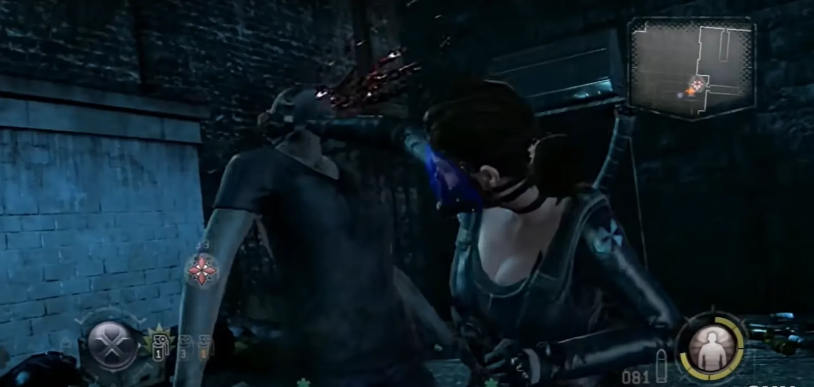

This was a whirlwind of a project. We developed our tools, engine and the game all from the ground up all within about a year.
I was part of the initial prototyping team which primarily consisted of myself, an artist and an engineer. We put together a playable concept prototype that was presented to Capcom and allowed for the official greenlight for production of the product. We had no design lead on the project, as well as went through 2 different design directors. I created the base narrative and mission structure for the game as well as being the point person for design and scripting tools.

I designed the core combat and cover systems for the game. One of the design challenges I had is 'how do we make an engaging 3rd person cover-based shooter that also allows for easy melee-based combat?'
The typical 'snap-to-cover' was not ideal. Games that had this system would fall apart if swarmed with close quarter enemies because players would panic and wrestle with the controls feeling 'stuck' to cover. So I decided to make cover automated and context sensitive whenever you were near valid objects. The player's controls and movement remained exactly the same regardless of being in cover or not which reduced the cognitive load.

One fun feature of the combat system I worked on was the 'Quick draw'. By holding down a button and rotating the analog stick, the player would quickly auto-aim in that direction without moving the camera. This became very useful when engaging with cover-based shooting enemies in the distance and a sudden swarm of zombies attacked in the middle.
Players could also bleed which spawned swarms of zombies but fortunately you could also make enemies bleed which made for fun strategic advantages and mob management.

We also had a lot of finisher moves as well as the ability to take a nearby enemy as a shield. All of these combat features were also available in the multiplayer mode which made for a unique take on standard third-person shooter fare of the day.
Key Contributions
- Created prototype that secured Capcom greenlight
- Designed innovative automated context-sensitive cover system
- Created 'Quick draw' auto-aim feature for swarm management
- Designed bleeding mechanic for zombie mob management
- Created finisher moves and human shield mechanics